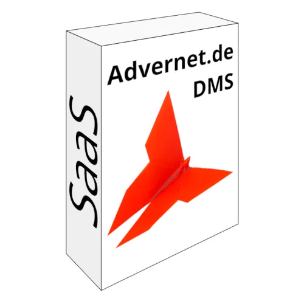

BeatNews.de Pro-Abo – 40 % Provision dauerhaft
Produktprofil · Marktplatz-Daten 2026-10-14 · Verkaufsseiten-Recherche 2026-10-14 · Kategorien: Software
- BeatNews.de Pro-Abo – 40 % Provision dauerhaft ist ein/e Mitgliederbereich & Videokurs in Software, vertrieben über den Digistore24-Marktplatz von Anbieter beatnews, gelistet seit 2026-07-25.
- Listenpreis $9.39 (subscription) — Checkout, Auslieferung und Rückerstattungen laufen über Digistore24 selbst, nicht über den Anbieter.
- Käuferschutz: keine standardisierte Garantie-Formulierung gefunden — Rückerstattungsbedingungen vor der Zahlung auf der offiziellen Seite prüfen.
Interesse an BeatNews.de Pro-Abo – 40 % Provision dauerhaft? Aktueller Preis, Boni und Garantiebedingungen finden Sie auf der offiziellen Seite des Anbieters:
Offizielle Verkaufsseite ansehen
Affiliate-Link (Werbung) — wir verdienen ggf. eine Provision, ohne Mehrkosten für Sie.
Marktplatz-Daten
| Produkttyp | Mitgliederbereich & Videokurs |
|---|---|
| Preis | $9.39 (Subscription) |
| Garantie/Rückgabe | Laut Verkaufsseite des Anbieters — vor dem Kauf auf der offiziellen Seite prüfen |
| Anbieter | beatnews (gelistet seit 2026-07-25) |
Marktplatz-Beschreibung des Anbieters
Alle fertigen Werbemittel (Banner in 6 Sprachen, 3 Formate und Partner-Guide) vorab ansehen: https://beatnews.de/partner DEUTSCH BeatNews.de verwandelt aktuelle Nachrichten automatisch in eigene Songs und persönliche Audio-Briefings (ähnlich einem Podcast) – per KI, in 16+ Sprachen und 10+ Musikstilen. Was Kunden mit dem Pro-Abo bekommen: • 30 eigene News-Songs pro Monat – keine vorgefertigten Tracks, sondern individuell aus echten Nachrichtenquellen generiert • 63+ vorgefertigte News-Kategorien + unbegrenzt eigene, private Kategorien • KI-Audio-Briefings: persönliche News-Podcasts, bis zu 2.000 Minuten pro Monat (ca. 33 Stunden), frei konfigurierbar nach Themen und Länge • 16+ Sprachen und 10+ Musikstile wählbar • Optionale Hands-Free-Sprachsteuerung • Überzeug dich selbst: Auf beatnews.de hörst du sofort einen Demo-Song – ganz ohne Registrierung. Unsere Landing-Page eignet sich außerdem perfekt für deine Promo-Zwecke. Warum sich BeatNews.de für Affiliates lohnt: • Echtes passives Einkommen statt nur Einmalzahlung – 40 % dauerhafte Provision auf jede monatliche Abo-Zahlung • Hohe Konversion durch geringe monatliche Abo-Kosten von nur 9,99 € • Affiliate-Partnerschaften werden automatisch akzeptiert • Internationales Produkt: 6 YouTube-Kanäle in DE, EN, ES, FR, PT, JA Unsere YouTube-Kanäle: - youtube.com/@BeatNewsDe (DE) - youtube.com/@BeatNewsEn (EN) - youtube.com/@BeatNewsEs (ES) - youtube.com/@BeatNewsFr (FR) - youtube.com/@BeatNewsPt (PT) - youtube.com/@BeatNewsJa (JA) Übrigens: BeatNews.de betreibt einen eigenen Merch-Shop auf TikTok (@beatnews.de) – mit eigenem TikTok-Shop-Affiliate-Programm. Als Partner kannst du dort zusätzlich mitverdienen und stärkst gleichzeitig die Markenbindung. ENGLISH BeatNews.de turns breaking news into custom songs and personal audio briefings (similar to a podcast) – powered by AI, in 16+ languages and 10+ music styles. What customers get with Pro: • 30 custom news songs per month – individually generated from real news sources • 63+ preset news categories + unlimited private custom categories • AI audio briefings: personal news podcasts, up to 2,000 minutes/month (approx. 33 hours) • 16+ languages, 10+ music styles • Optional hands-free voice control • Try it yourself: listen to a demo song at beatnews.de – no signup required Why affiliates love BeatNews.de: • True passive income – 40% recurring commission on every monthly payment • High conversion thanks to low €9.99/month price point • Affiliate partnerships auto-accepted • International product with 6 YouTube channels (DE, EN, ES, FR, PT, JA) By the way: BeatNews.de runs its own merch shop on TikTok (@beatnews.de) – with its own TikTok Shop affiliate program. As a partner you can earn on top there and strengthen brand loyalty at the same time. ESPAÑOL BeatNews.de convierte noticias en canciones personalizadas y briefings de audio (tipo podcast) con IA, en 16+ idiomas y 10+ estilos musicales. Suscripción Pro: 30 canciones/mes, 63+ categorías, briefings de audio IA hasta 2.000 min/mes. Comisión para afiliados: 40 % recurrente sobre 9,99 €/mes. Aceptación automática. Prueba un demo en beatnews.de – sin registro. Además, BeatNews.de tiene su propia tienda de merch en TikTok (@beatnews.de), con su propio programa de afiliados de TikTok Shop. FRANÇAIS BeatNews.de transforme l'actualité en chansons personnalisées et briefings audio (comme un podcast) par IA, dans 16+ langues et 10+ styles musicaux. Abonnement Pro : 30 chansons/mois, 63+ catégories, briefings audio IA jusqu'à 2 000 min/mois. Commission affilié : 40 % récurrente sur 9,99 €/mois. Acceptation automatique. Écoute un démo sur beatnews.de – sans inscription. De plus, BeatNews.de gère sa propre boutique de merch sur TikTok (@beatnews.de), avec son propre programme d'affiliation TikTok Shop. PORTUGUÊS BeatNews.de transforma notícias em músicas personalizadas e briefings de áudio (tipo podcast) com IA, em 16+ idiomas e 10+ estilos musicais. Assinatura Pro: 30 músicas/mês, 63+ categorias, briefings de áudio IA até 2.000 min/mês. Comissão para afiliados: 40 % recorrente sobre 9,99 €/mês. Aceitação automática. Ouça um demo em beatnews.de – sem cadastro. Aliás, BeatNews.de tem a sua própria loja de merch no TikTok (@beatnews.de), com o seu próprio programa de afiliados TikTok Shop.
Von der Verkaufsseite des Anbieters
Seitentitel: BeatNews.de – KI-generierte Audio-Briefings & News-Songs
Meta-Beschreibung: BeatNews.de verwandelt aktuelle Nachrichten in personalisierte Audio-Briefings und Songs. 63+ Kategorien, 16+ Sprachen, 10 Musikstile – generiert von KI, in Sekunden bereit.
Hauptüberschrift
BeatNews.de Pro-Abo
Abschnitts-Überschriften
- Was du mit Pro bekommst
- So funktioniert es
Einstiegstext
Digitales Abo – sofortige Freischaltung BeatNews.de Pro-Abo Deine Nachrichten als Song – KI-generierte Audio-Briefings und News-Songs in über 16 Sprachen.
16+ Sprachen Songs und Briefings in Deutsch, Englisch, Spanisch, Japanisch u. v. m.
Eigene Kategorien Erstelle beliebig viele private News-Kategorien zu deinen Themen.
Registriere dich kostenlos und wähle das Pro-Abo. Die Freischaltung erfolgt sofort und automatisch in deinem Online-Konto.
Recherche-Methode: rohes HTML · 317 Wörter · Qualität: medium · recherchiert am 2026-10-14. Vollständige Recherche-Datei (MD) ↗
Wie Produkte dieser Art geliefert werden
Allgemeiner Hinweis zu diesem Produkttyp (keine anbieterspezifische Anleitung): Videokurse laufen über einen Mitgliederbereich: nach dem Checkout erhalten Sie Zugangsdaten per E-Mail und können die Lektionen in Ihrem eigenen Tempo streamen. Für die genaue Anwendung von BeatNews.de Pro-Abo – 40 % Provision dauerhaft sind die offizielle Verkaufsseite und die enthaltenen Materialien maßgeblich.
Gut zu wissen
- Keine Garantie-Formulierung in unserer Recherche gefunden — bestätigen Sie das Rückgabefenster auf der offiziellen Seite, bevor Sie kaufen.
Was ist BeatNews.de Pro-Abo – 40 % Provision dauerhaft?
BeatNews.de Pro-Abo – 40 % Provision dauerhaft ist ein/e mitgliederbereich & videokurs in der Kategorie Software des Digistore24-Marktplatzes, veröffentlicht von Anbieter beatnews und im Verkauf seit 2026-07-25. Der Anbieter beschreibt es so: "Alle fertigen Werbemittel (Banner in 6 Sprachen, 3 Formate und Partner-Guide) vorab ansehen: https://beatnews.de/partner DEUTSCH BeatNews.de verwandelt aktuelle Nachrichten automatisch in eigene Songs und persönliche Audio-Briefings (ähnlich einem Podcast) – p" (Marktplatz-Beschreibung des Anbieters, leicht gekürzt).
BeatNews.de Pro-Abo – 40 % Provision dauerhaft Preis: was Sie zahlen
Der Marktplatz listet BeatNews.de Pro-Abo – 40 % Provision dauerhaft zum $9.39 Preis (subscription). Digistore24 fügt im Checkout die gesetzliche Steuer Ihres Landes hinzu — dort sehen Sie den Endbetrag vor der Zahlung. Eine separate Plattformgebühr gibt es nicht; Anbieter können eigene Upsells nach dem Checkout anbieten.
BeatNews.de Pro-Abo – 40 % Provision dauerhaft Rückerstattung und Geld-zurück-Garantie
Wir haben keine standardisierte Garantie-Formulierung auf der Verkaufsseite gefunden. Rückerstattungen für Digistore24-Käufe laufen über die Plattform: Antrag über den Support-Link in Ihrer Bestell-E-Mail, innerhalb des Garantiezeitfensters, das im Checkout angezeigt wird. Praktischer Rat: Entscheiden Sie innerhalb des Fensters — wenn das Produkt unter den Erwartungen bleibt, erstatten lassen statt irren lassen.
Mechanik im Detail: So funktionieren Digistore24-Rückerstattungen.
Für wen ist BeatNews.de Pro-Abo – 40 % Provision dauerhaft geeignet?
Basierend auf der Software-Einordnung und der subscription-Abrechnung richtet sich BeatNews.de Pro-Abo – 40 % Provision dauerhaft an Käufer, die software-Lösungen suchen zum Einstiegspreis. Der ehrliche Test ist nicht die Kategorie, sondern Ihre eigene Situation: Werden Sie es realistisch innerhalb des Garantiefensters nutzen? Wenn ja, ist der Preis eine Investition; wenn nein, ist er Ballast — unabhängig von der Qualität.
Ist BeatNews.de Pro-Abo – 40 % Provision dauerhaft seriös? Was Sie vor dem Kauf prüfen
Wir bewerten keine Seriosität — das kann niemand, ohne das Produkt zu nutzen. Prüfbare Punkte, alle auf dieser Seite: die Marktplatz-Historie des Anbieters (im Verkauf seit 2026-07-25), die wörtlichen Verkaufsseiten-Auszüge unten (gekennzeichnet als Anbieteraussagen — deren Werbung, nicht unsere Empfehlung), die Garantiebedingungen im Checkout und die Auslieferungsart. Vorsichtsignale bei jedem Angebot: Countdown-Dringlichkeit gepaart mit vagen Rückerstattungsbedingungen, Testimonials ohne Datum und Anbieterseiten, die den Preis bis zum Checkout verstecken.
Wie kommen Sie nach dem Kauf an BeatNews.de Pro-Abo – 40 % Provision dauerhaft?
Der Checkout läuft über Digistore24. Nach der Zahlung: Videokurse laufen über einen Mitgliederbereich: nach dem Checkout erhalten Sie Zugangsdaten per E-Mail und können die Lektionen in Ihrem eigenen Tempo streamen. Bewahren Sie die Bestell-E-Mail auf — sie ist Ihr Schlüssel zum/d zur mitgliederbereich & videokurs, zu Rückerstattungsanträgen und zum Digistore24-Käufersupport.
BeatNews.de Pro-Abo – 40 % Provision dauerhaft Erfahrungen: so recherchieren Sie richtig
Die meisten „Erfahrungsberichte" zu Marktplatz-Produkten sind Affiliate-Inhalte — einschließlich Seiten wie dieser, die an Käufen mitverdienen. Behandeln Sie jeden Bericht (auch unseren) als Ausgangspunkt und prüfen Sie gegen Primärquellen: die Verkaufsseite des Anbieters, die Digistore24-Rückerstattungsrichtlinie und — für software — unabhängige Communities außerhalb des Affiliate-Ökosystems. Auf dieser Seite sind die Verkaufsseiten-Auszüge unten wörtlich zitiert, damit Sie die Aussagen des Anbieters bewerten können, ohne wegzuklicken.
Wie Sie BeatNews.de Pro-Abo – 40 % Provision dauerhaft sicher kaufen
- Öffnen Sie die offizielle Verkaufsseite und lesen Sie das vollständige Angebot.
- Bestätigen Sie Endpreis und Garantiezeitfenster auf der Digistore24-Kassenseite — sie ist bindend, kein Vergleichsportal.
- Zahlen Sie innerhalb des Digistore24-Checkouts (niemals per Überweisung oder Off-Platform-Links).
- Speichern Sie die Bestellbestätigung; notieren Sie die Rückerstattungsfrist im Kalender.
- Prüfen Sie zügig. Der Digistore24-Käufersupport hilft, wenn der Anbieter nicht reagiert.
Vollständiges Recherche-Archiv für dieses Produkt (Markdown: kompletter Marktplatz-Datensatz + wörtliche Verkaufsseiten-Auszüge): BeatNews.de Pro-Abo – 40 % Provision dauerhaft — Datenarchiv (.md).
- Listenpreis & Abrechnung — Quelle: offizielle Digistore24-Marktplatz-API, Stand 2026-10-14. Maßgeblich für den aktuellen Preis ist immer die Kassenseite.
- Verkaufsseiten-Zitate — Quelle: https://beatnews.de/pro, abgerufen 2026-10-14 (Methode: rohes HTML). Verify: offizielle Seite öffnen.
- Garantie / Rückgabe — vom Anbieter festgelegt; vor dem Kauf auf der Verkaufsseite bestätigen.
- Nicht von uns geprüft: Produktqualität, Ergebnisse, Testimonials — kein Praxistest für dieses Listing durchgeführt.
Häufige Fragen zu BeatNews.de Pro-Abo – 40 % Provision dauerhaft
Antworten aus dem Marktplatz-Snapshot (2026-10-14) und der Verkaufsseiten-Recherche (2026-10-14); Anbieteraussagen sind inline gekennzeichnet.
Was ist BeatNews.de Pro-Abo – 40 % Provision dauerhaft?
BeatNews.de Pro-Abo – 40 % Provision dauerhaft ist ein Angebot des Typs „Mitgliederbereich & Videokurs" im Digistore24-Marktplatz, Anbieter: beatnews, gelistet seit 2026-07-25. Eingepflegt unter Software. Digistore24 wickelt Checkout, Lieferung und Rückgaben ab.
Wie viel kostet BeatNews.de Pro-Abo – 40 % Provision dauerhaft?
Der Digistore24-Marktplatz listet es für $9.39 (subscription). Preise legt der Anbieter fest und können sich ändern — der Marktplatz-Eintrag oben zeigt den Schnappschuss; die offizielle Verkaufsseite zeigt den aktuellen Preis.
Gibt es eine Geld-zurück-Garantie für BeatNews.de Pro-Abo – 40 % Provision dauerhaft?
Unsere Verkaufsseiten-Recherche hat keine explizite Garantie-Formulierung gefunden. Viele Digistore24-Produkte bieten 60 Tage Geld-zurück, aber das legt jeder Anbieter selbst fest — bestätigen Sie es auf der offiziellen Verkaufsseite, bevor Sie kaufen.
Ist BeatNews.de Pro-Abo – 40 % Provision dauerhaft seriös?
Wir bewerten keine Seriosität — wir veröffentlichen überprüfbare Zahlen: Anbieter beatnews (gelistet seit 2026-07-25), mit der vollständigen Verkaufsseiten-Recherche archiviert auf dieser Seite (Anbieteraussagen als solche gekennzeichnet). Lesen Sie unsere 6-Punkte-Bewertungsmethode und entscheiden Sie anhand der Zahlen — oder diskutieren Sie BeatNews.de Pro-Abo – 40 % Provision dauerhaft auf GitHub.
Wo kann ich BeatNews.de Pro-Abo – 40 % Provision dauerhaft sicher kaufen?
Nur über die offizielle Verkaufsseite, die auf dieser Seite verlinkt ist (Checkout und Rückgaben laufen über Digistore24). Prüfen Sie dort Preis und Garantie vor der Bestellung. Der Link ist ein Affiliate-Link — der Kauf unterstützt diese Website ohne Mehrkosten für Sie.
Wie erhalte ich BeatNews.de Pro-Abo – 40 % Provision dauerhaft nach der Zahlung?
Der Checkout läuft über Digistore24: Nach der Zahlung erhalten Sie Zugangsdaten und Ihr Abo-Dashboard. Lieferdetails für diesen Produkttyp: Videokurse laufen über einen Mitgliederbereich: nach dem Checkout erhalten Sie Zugangsdaten per E-Mail und können die Lektionen in Ihrem eigenen Tempo streamen. Bei Problemen kann der Digistore24-Käufersupport Ihre Bestellung wiederherstellen.
Alle 50 Käuferfragen zu Software — das komplette Kategorie-FAQ.
BeatNews.de Pro-Abo – 40 % Provision dauerhaft auf Reddit diskutieren
In Community-Threads vergleichen echte Käufer Erfahrungen. Wir verlinken Communities, keine einzelnen Posts — Threads verschwinden, Subreddits bleiben:
- r/de_EDV — deutschsprachige Community mit Diskussionen zu software.
- Reddit-Suche nach „BeatNews.de Pro-Abo – 40 % Provision dauerhaft" — Live-Ergebnisse, von uns nicht beeinflusst.
- Top-„Erfahrungs"-Treffer dieses Jahr — selbst nach Aktualität filtern.
Passendes auf Amazon.de
Physische Produkte und Zubehör, die häufig zusammen mit BeatNews.de Pro-Abo – 40 % Provision dauerhaft gekauft werden:
- Software auf Amazon.de — Top-Ergebnisse, Amazon-Ranking.
- Bestseller: Software — live Liste von Amazon, von uns nicht kuratiert.
Werbung: Als Amazon-Partner verdient DigistorePicks DE an qualifizierten Käufen (Partner-tag adminstorede-21). Amazon setzt eigene Preise und Provisionen (niedrige einstellige Prozente — weit unter den 30–75% der Digistore24-Anbieter). Amazon ist ein Convenience-Angebot für Sachprodukte, kein Ersatz für das digitale Produkt oben.
Ähnliche Angebote in Software

Maya: digitale Assistentin für WhatsApp und Telefon Maya beantwortet Kundenanfragen kleiner Betriebe rund um die Uhr auf WhatsApp und im Paket mit Telefon auch

Zencaptcha schützt Webseiten vor Spam und betrügerischen Aktivitäten. Falsche und temporäre E-Mail-Adressen werden erkannt und Bots werden herausgefordert, noch

+++ Willkommen beim Meisterbot-Partnerprogramm! +++ Verdienen Sie über 850 EUR Provision pro Sale mit der ersten schlüsselfertigen KI-Telefonzentrale für den Mi

Verdienen Sie 40 % Provision! Werden Sie Affiliate und profitieren Sie von unserem attraktiven 40% Partnerprovisionssatz – eine der höchsten Provisionen auf Dig
Ähnliche Preislage in Software

Hunter Disk Cleaner ist ein modernes, rasend schnelles und schlankes Tool zur Festplattenbereinigung für Windows. Spüren Sie versteckte, überflüssige Dateien si
Offline-Web-App für alle Abos und Verträge auf einen Blick: berechnet automatisch den spätesten Kündigungstermin, exportiert Erinnerungen als Kalenderdatei (ICS
Zielgruppe: • Nutzer alter Laptops & PCs (ohne TPM) • Firmen, die Windows offline brauchen • IT-YouTuber, TikToker & Technik-Blogs Vorteile für Affiliat

Empfehlen Sie das Advernet.de DMS! Es kann auch als Software-as-a-Service genutzt werden und bietet unter anderem eine webbasierte Benutzeroberfläche, eine REST
Ähnliche Suchanfragen
Wo Sie es sich ansehen können
Wo Sie es sich ansehen können
Aktuelle Preise, Garantie und Boni finden Sie auf der offiziellen Verkaufsseite:
Offizielle Verkaufsseite ansehen
Das ist ein Affiliate-Link (Werbung) — kaufen Sie darüber, verdienen wir ggf. eine Provision, ohne Mehrkosten für Sie.
Quellen & weiterführende Informationen
- Offizielle Verkaufsseite (aktueller Preis, Garantie, Boni): beatnews.de/pro (Affiliate-Link)
- Öffentliche Digistore24-Produktseite: checkout-ds24.com/product/709841
- Vollständige Recherche-Datei (Markdown, versioniert): content/products/57740-beatnews-de-pro-abo-40-provision-dauerhaft.md
- Marktplatz-Kategorie: Software
Wie wir Produkte wie BeatNews.de Pro-Abo – 40 % Provision dauerhaft bewerten
Sechs Prüfungen, ausschließlich mit offiziellen Marktplatz-Zahlen. Die vollständige Bewertungsmethode lesen · unsere Recherche-Standards & Kennzeichnung.
Fragen oder eigene Erfahrungen mit BeatNews.de Pro-Abo – 40 % Provision dauerhaft?
Praxis-Tests veröffentlichen wir erst, nachdem wir ein Produkt selbst gekauft haben — aber Ihre Erfahrung hilft anderen Lesern: Diskussion zu BeatNews.de Pro-Abo – 40 % Provision dauerhaft auf GitHub starten/verfolgen. Falsche Zahl gefunden? Korrektur melden — jede Seite zeigt ihre Datenstände, Korrekturen gelten für die ganze Website.